Introduction
Seasonal patterns are ubiquitous in functional data: temperature cycles, biological rhythms, economic fluctuations, and many more. This vignette demonstrates the seasonal analysis capabilities of fdars, organized from basic period estimation to advanced techniques for complex signals.
What you’ll learn:
- How to estimate the period of seasonal signals
- How to detect multiple concurrent seasonalities
- How to tune peak detection parameters for noisy data
- When to use instantaneous period estimation (and when not to)
- How to analyze short series with only 3-5 cycles
Estimating Seasonal Period
The first step in seasonal analysis is often determining the period. fdars provides two methods: FFT (frequency domain) and ACF (autocorrelation).
Simple Periodic Signals
Let’s start with a clean sinusoidal signal.
# Time grid: 10 complete cycles of period 2
t <- seq(0, 20, length.out = 400)
period_true <- 2
# Pure sine wave
X_pure <- sin(2 * pi * t / period_true)
fd_pure <- fdata(matrix(X_pure, nrow = 1), argvals = t)
# Plot
df <- data.frame(t = t, y = X_pure)
ggplot(df, aes(x = t, y = y)) +
geom_line(color = "steelblue") +
labs(title = "Pure Seasonal Signal (Period = 2)", x = "Time", y = "Value")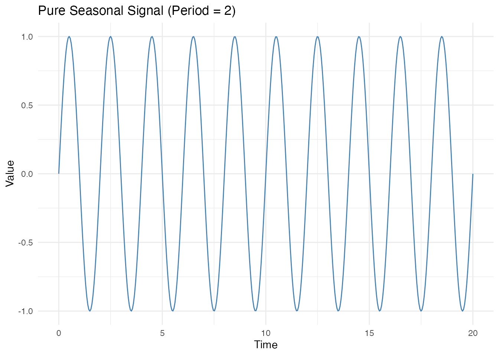
# FFT method
est_fft <- estimate.period(fd_pure, method = "fft")
cat("FFT estimate:", est_fft$period, "(true:", period_true, ")\n")
#> FFT estimate: 2.005013 (true: 2 )
cat("Confidence:", round(est_fft$confidence, 3), "\n")
#> Confidence: 199.585The confidence value indicates how pronounced the dominant frequency is relative to other frequencies. High confidence (close to 1) means a clear, dominant period.
Noisy Signals
Real data always contains noise. Let’s see how the methods handle it.
# Add noise
X_noisy <- sin(2 * pi * t / period_true) + rnorm(length(t), sd = 0.3)
fd_noisy <- fdata(matrix(X_noisy, nrow = 1), argvals = t)
df <- data.frame(t = t, y = X_noisy)
ggplot(df, aes(x = t, y = y)) +
geom_line(color = "steelblue", alpha = 0.7) +
labs(title = "Noisy Seasonal Signal (SD = 0.3)", x = "Time", y = "Value")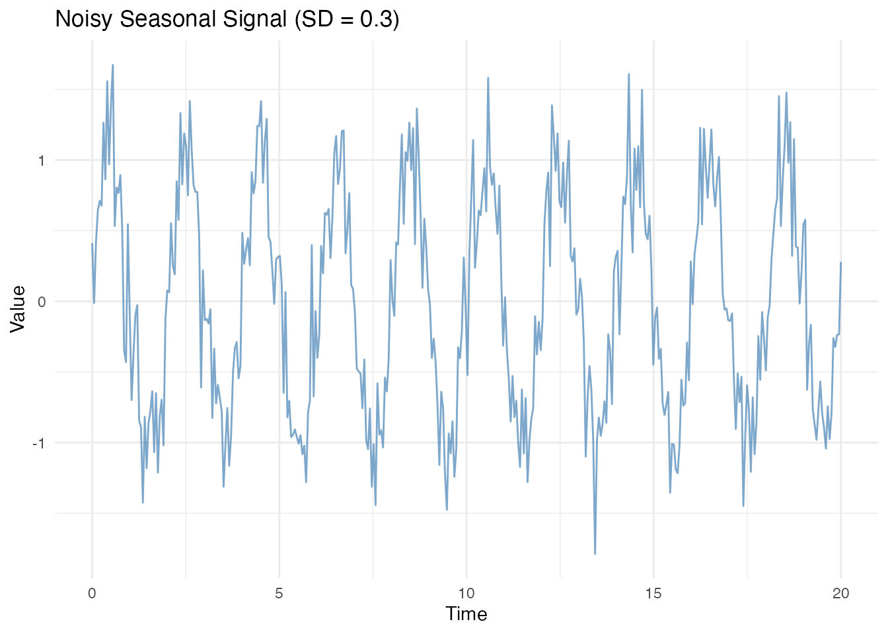
# Compare methods
est_fft_noisy <- estimate.period(fd_noisy, method = "fft")
est_acf <- estimate.period(fd_noisy, method = "acf")
cat("True period:", period_true, "\n")
#> True period: 2
cat("FFT estimate:", est_fft_noisy$period, "(confidence:", round(est_fft_noisy$confidence, 3), ")\n")
#> FFT estimate: 2.005013 (confidence: 171.93 )
cat("ACF estimate:", est_acf$period, "(confidence:", round(est_acf$confidence, 3), ")\n")
#> ACF estimate: 2.005013 (confidence: 0.783 )Both methods typically agree for clean periodic signals. The ACF method can be more robust to certain types of noise, while FFT is faster and handles multiple harmonics well.
Signals with Multiple Harmonics
Real seasonal patterns often have harmonics (e.g., yearly + half-yearly components that share the same fundamental period).
# Signal with 2nd and 3rd harmonics
X_multi <- sin(2 * pi * t / period_true) +
0.3 * sin(4 * pi * t / period_true) + # 2nd harmonic
0.1 * sin(6 * pi * t / period_true) + # 3rd harmonic
rnorm(length(t), sd = 0.1)
fd_multi <- fdata(matrix(X_multi, nrow = 1), argvals = t)
df <- data.frame(t = t, y = X_multi)
ggplot(df, aes(x = t, y = y)) +
geom_line(color = "steelblue") +
labs(title = "Signal with Multiple Harmonics", x = "Time", y = "Value")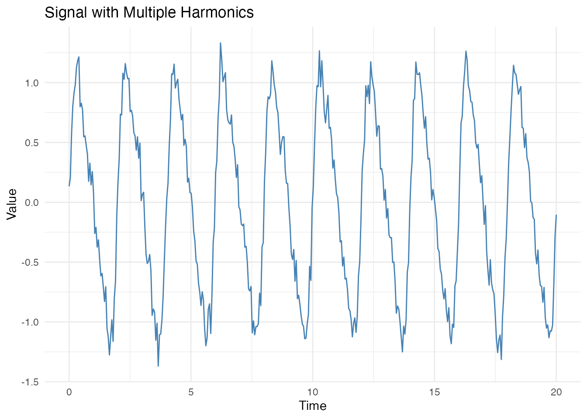
est_multi <- estimate.period(fd_multi, method = "fft")
cat("Estimated period:", est_multi$period, "(true:", period_true, ")\n")
#> Estimated period: 2.005013 (true: 2 )The FFT method correctly identifies the fundamental period, even when harmonics are present. The harmonics share the same fundamental frequency, so they reinforce the estimate.
Detecting Multiple Concurrent Seasonalities
Sometimes a signal contains multiple independent
periodicities (e.g., daily and yearly cycles). The
estimate.period() function returns only the dominant
period. Here’s how to detect multiple periods.
Why estimate.period() Returns Only One Period
# Signal with two independent periods
period1 <- 2 # Fast cycle
period2 <- 7 # Slow cycle
X_dual <- sin(2 * pi * t / period1) + 0.6 * sin(2 * pi * t / period2)
fd_dual <- fdata(matrix(X_dual, nrow = 1), argvals = t)
df <- data.frame(t = t, y = X_dual)
ggplot(df, aes(x = t, y = y)) +
geom_line(color = "steelblue") +
labs(title = "Signal with Two Periods (2 and 7)",
x = "Time", y = "Value")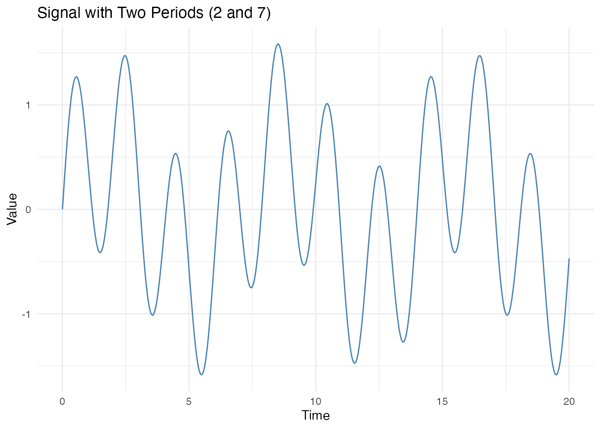
est_single <- estimate.period(fd_dual, method = "fft")
cat("Single estimate:", est_single$period, "\n")
#> Single estimate: 2.005013
cat("(Only detects the dominant period)\n")
#> (Only detects the dominant period)Using detect.periods()
The detect.periods() function uses an iterative residual
approach implemented in Rust for efficiency:
- Estimate the dominant period using FFT
- Subtract a fitted sinusoid at that period
- Repeat on the residual until confidence or strength drops too low
# Detect multiple periods using the package function
# Higher thresholds prevent spurious detection
detected <- detect.periods(fd_dual, max_periods = 3,
min_confidence = 0.5,
min_strength = 0.25)
print(detected)
#> Multiple Period Detection
#> -------------------------
#> Periods detected: 3
#>
#> Period 1: 2.005 (confidence=148.091, strength=0.741, amplitude=0.956)
#> Period 2: 6.683 (confidence=123.084, strength=0.628, amplitude=0.444)
#> Period 3: 10.025 (confidence=128.631, strength=0.705, amplitude=0.282)Visualizing the Decomposition
# Reconstruct each component using detected periods
components <- data.frame(t = t)
residual <- X_dual
if (detected$n_periods > 0) {
for (i in seq_len(detected$n_periods)) {
omega <- 2 * pi / detected$periods[i]
cos_comp <- cos(omega * t)
sin_comp <- sin(omega * t)
a <- 2 * mean(residual * cos_comp)
b <- 2 * mean(residual * sin_comp)
component <- a * cos_comp + b * sin_comp
components[[paste0("Period_", round(detected$periods[i], 1))]] <- component
residual <- residual - component
}
}
components$Residual <- residual
components$Original <- X_dual
# Plot decomposition
library(tidyr)
df_long <- pivot_longer(components, -t, names_to = "Component", values_to = "Value")
# Get period column names (exclude t, Residual, Original)
period_cols <- setdiff(names(components), c("t", "Residual", "Original"))
df_long$Component <- factor(df_long$Component,
levels = c("Original", period_cols, "Residual"))
ggplot(df_long, aes(x = t, y = Value)) +
geom_line(color = "steelblue") +
facet_wrap(~Component, ncol = 1, scales = "free_y") +
labs(title = "Decomposition into Periodic Components",
x = "Time", y = "Value")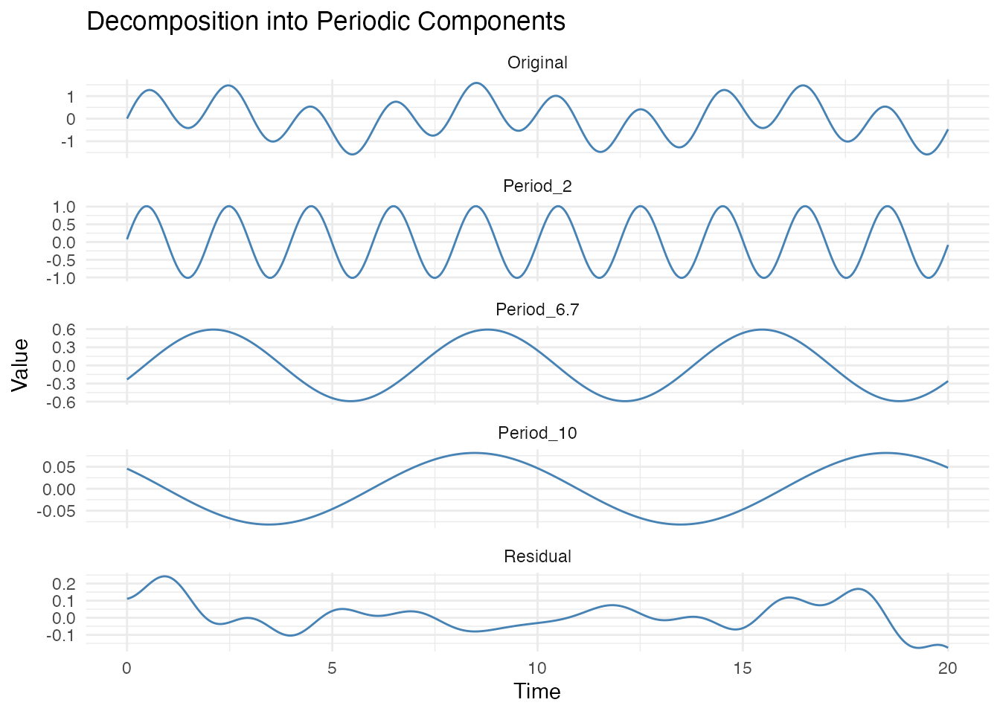
Practical guidance:
- For harmonics of the same fundamental:
estimate.period()correctly finds the fundamental period. No iterative approach needed. - For truly different periods (e.g., daily + yearly): use the iterative approach above.
- When confidence drops below threshold: stop - remaining signal is likely noise.
Note on detection order: Periods are detected in order of amplitude, not period length. The component with the highest FFT power (roughly proportional to amplitude squared) is found first. For example, if a signal has a weak yearly cycle and a strong weekly cycle, the weekly cycle will be detected first regardless of which period is longer. Very weak periodicities (< 20% of the dominant amplitude) may require lower thresholds but risk false positives.
Handling Non-Stationary Data
Real-world time series often have trends that can mask or distort seasonal patterns. fdars provides comprehensive detrending and decomposition functions to handle this.
The Problem: Trends Mask Seasonality
When a strong trend is present, seasonal analysis functions may fail:
# Signal with strong linear trend + seasonality + noise
t <- seq(0, 20, length.out = 400)
X_trend <- 5 + 2 * t + sin(2 * pi * t / 2.5) + rnorm(length(t), sd = 0.3)
fd_trend <- fdata(matrix(X_trend, nrow = 1), argvals = t)
df <- data.frame(t = t, y = X_trend)
ggplot(df, aes(x = t, y = y)) +
geom_line(color = "steelblue") +
labs(title = "Seasonal Signal with Strong Linear Trend",
subtitle = "The trend dominates, masking the seasonality",
x = "Time", y = "Value")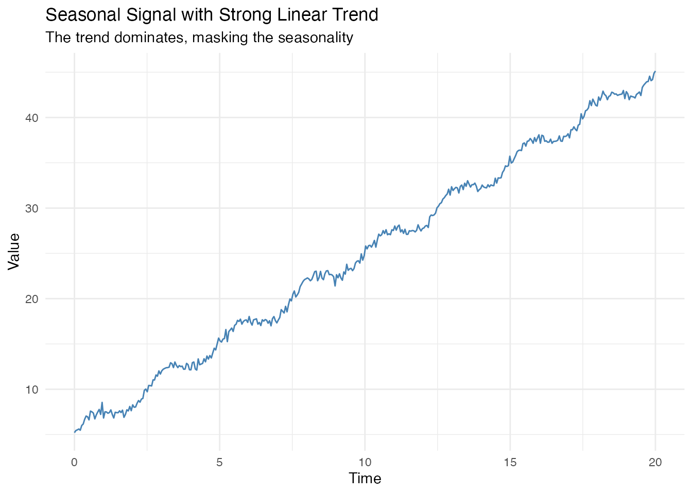
# Without detrending - incorrect results!
period_wrong <- estimate.period(fd_trend)$period
strength_wrong <- seasonal.strength(fd_trend, period = 2.5)
cat("WITHOUT detrending:\n")
#> WITHOUT detrending:
cat(" Estimated period:", round(period_wrong, 2), "(true: 2.5)\n")
#> Estimated period: 20.05 (true: 2.5)
cat(" Seasonal strength:", round(strength_wrong, 3), "(should be ~1)\n")
#> Seasonal strength: 0.005 (should be ~1)The trend causes: - Period estimation to return the series length (20) instead of the true period (2.5) - Seasonal strength to be nearly zero, when it should be close to 1
Using detrend()
The detrend() function removes trends using various
methods:
# Linear detrending
fd_linear <- detrend(fd_trend, method = "linear")
# Polynomial detrending (degree 2)
fd_poly <- detrend(fd_trend, method = "polynomial", degree = 2)
# LOESS detrending (flexible, non-parametric)
fd_loess <- detrend(fd_trend, method = "loess", bandwidth = 0.3)
# Automatic selection via AIC
fd_auto <- detrend(fd_trend, method = "auto")
# Compare results
cat("After detrending, estimated periods:\n")
#> After detrending, estimated periods:
cat(" Linear: ", round(estimate.period(fd_linear)$period, 3), "\n")
#> Linear: 2.506
cat(" Polynomial: ", round(estimate.period(fd_poly)$period, 3), "\n")
#> Polynomial: 2.506
cat(" LOESS: ", round(estimate.period(fd_loess)$period, 3), "\n")
#> LOESS: 2.506
cat(" Auto: ", round(estimate.period(fd_auto)$period, 3), "(true: 2.5)\n")
#> Auto: 2.506 (true: 2.5)Getting Both Trend and Detrended Data
Use return_trend = TRUE to get both components:
result <- detrend(fd_trend, method = "linear", return_trend = TRUE)
# Plot original, trend, and detrended
df_decomp <- data.frame(
t = rep(t, 3),
y = c(fd_trend$data[1,], result$trend$data[1,], result$detrended$data[1,]),
Component = factor(rep(c("Original", "Trend", "Detrended"), each = length(t)),
levels = c("Original", "Trend", "Detrended"))
)
ggplot(df_decomp, aes(x = t, y = y)) +
geom_line(color = "steelblue") +
facet_wrap(~Component, ncol = 1, scales = "free_y") +
labs(title = "Linear Detrending Result",
x = "Time", y = "Value")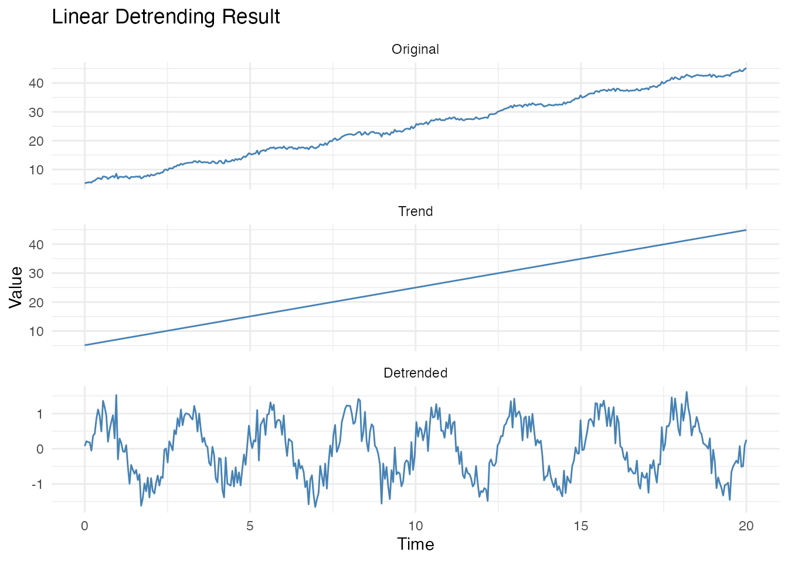
Seasonal-Trend Decomposition
For full decomposition into trend, seasonal, and remainder
components, use decompose():
# Additive decomposition: data = trend + seasonal + remainder
decomp <- decompose(fd_trend, period = 2.5, method = "additive")
# Plot all components
df_stl <- data.frame(
t = rep(t, 4),
y = c(fd_trend$data[1,], decomp$trend$data[1,],
decomp$seasonal$data[1,], decomp$remainder$data[1,]),
Component = factor(rep(c("Original", "Trend", "Seasonal", "Remainder"), each = length(t)),
levels = c("Original", "Trend", "Seasonal", "Remainder"))
)
ggplot(df_stl, aes(x = t, y = y)) +
geom_line(color = "steelblue") +
facet_wrap(~Component, ncol = 1, scales = "free_y") +
labs(title = "Additive Seasonal-Trend Decomposition",
x = "Time", y = "Value")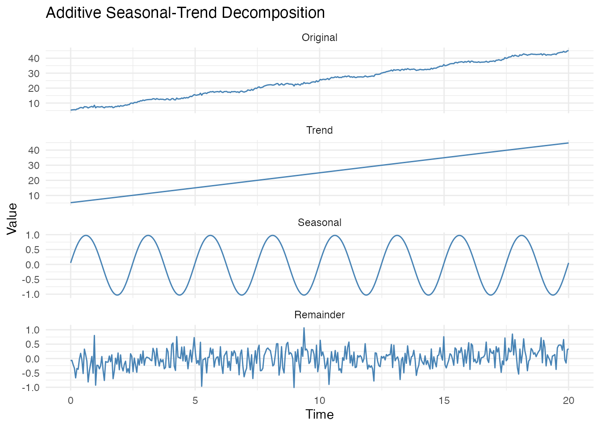
Multiplicative Seasonality
When the seasonal amplitude grows with the trend level, use multiplicative decomposition:
# Multiplicative pattern: amplitude grows with level + noise
X_mult <- (2 + 0.3 * t) * (1 + 0.4 * sin(2 * pi * t / 2.5)) + rnorm(length(t), sd = 0.5)
fd_mult <- fdata(matrix(X_mult, nrow = 1), argvals = t)
# Plot - note how peaks get taller over time
df_mult <- data.frame(t = t, y = X_mult)
ggplot(df_mult, aes(x = t, y = y)) +
geom_line(color = "steelblue") +
labs(title = "Multiplicative Seasonality",
subtitle = "Seasonal amplitude grows with trend level",
x = "Time", y = "Value")
# Multiplicative decomposition
decomp_mult <- decompose(fd_mult, period = 2.5, method = "multiplicative")
cat("Multiplicative decomposition:\n")
#> Multiplicative decomposition:
cat(" Seasonal range:", round(range(decomp_mult$seasonal$data[1,]), 3), "\n")
#> Seasonal range: 0.631 1.469
cat(" (Values near 1 indicate multiplicative factors)\n")
#> (Values near 1 indicate multiplicative factors)Integrated Detrending in Other Functions
All main seasonal functions support a detrend_method
parameter:
# These are equivalent:
# 1. Explicit detrending
fd_det <- detrend(fd_trend, method = "linear")
p1 <- estimate.period(fd_det)$period
# 2. Integrated detrending parameter
p2 <- estimate.period(fd_trend, detrend_method = "linear")$period
cat("Explicit detrend:", round(p1, 3), "\n")
#> Explicit detrend: 2.506
cat("Integrated param:", round(p2, 3), "\n")
#> Integrated param: 2.506The detrend_method parameter is available in: -
estimate.period() - For accurate period estimation on
trending data - detect.peaks() - For correct peak
prominence calculation - seasonal.strength() - For true
seasonality measurement - detect.periods() - Uses “auto” by
default
# Dramatic improvement with detrending
cat("\nSeasonal strength comparison:\n")
#>
#> Seasonal strength comparison:
cat(" Without detrend:", round(seasonal.strength(fd_trend, period = 2.5), 3), "\n")
#> Without detrend: 0.005
cat(" With detrend: ", round(seasonal.strength(fd_trend, period = 2.5,
detrend_method = "linear"), 3), "\n")
#> With detrend: 0.834Peak Detection with Detrending
Trends also affect peak detection - the upward slope can distort prominence calculations and make later peaks appear more prominent than earlier ones.
# Detect peaks without detrending
peaks_no_detrend <- detect.peaks(fd_trend, min_distance = 2, smooth_first = TRUE)
# Detect peaks with detrending
peaks_with_detrend <- detect.peaks(fd_trend, min_distance = 2, smooth_first = TRUE,
detrend_method = "linear")
cat("Peak detection on trending data:\n")
#> Peak detection on trending data:
cat(" Without detrend:", nrow(peaks_no_detrend$peaks[[1]]), "peaks,",
"mean period:", round(peaks_no_detrend$mean_period, 3), "\n")
#> Without detrend: 5 peaks, mean period: 4.398
cat(" With detrend: ", nrow(peaks_with_detrend$peaks[[1]]), "peaks,",
"mean period:", round(peaks_with_detrend$mean_period, 3), "(true: 2.5)\n")
#> With detrend: 8 peaks, mean period: 2.506 (true: 2.5)
# Visualize the difference
peaks_raw <- peaks_no_detrend$peaks[[1]]
peaks_det <- peaks_with_detrend$peaks[[1]]
# Get detrended data for plotting
fd_detrended <- detrend(fd_trend, method = "linear")
df_peaks <- data.frame(
t = rep(t, 2),
y = c(fd_trend$data[1,], fd_detrended$data[1,]),
Panel = factor(rep(c("Original (with trend)", "Detrended"), each = length(t)),
levels = c("Original (with trend)", "Detrended"))
)
# Combine peak data
peaks_raw$Panel <- "Original (with trend)"
peaks_det$Panel <- "Detrended"
# Adjust detrended peak values to match detrended data
peaks_det$value <- fd_detrended$data[1, sapply(peaks_det$time, function(x) which.min(abs(t - x)))]
peaks_combined <- rbind(peaks_raw, peaks_det)
peaks_combined$Panel <- factor(peaks_combined$Panel,
levels = c("Original (with trend)", "Detrended"))
ggplot(df_peaks, aes(x = t, y = y)) +
geom_line(color = "steelblue", alpha = 0.7) +
geom_point(data = peaks_combined, aes(x = time, y = value),
color = "red", size = 2) +
facet_wrap(~Panel, ncol = 1, scales = "free_y") +
labs(title = "Peak Detection: With vs Without Detrending",
subtitle = "Detrending ensures consistent peak detection across the series",
x = "Time", y = "Value")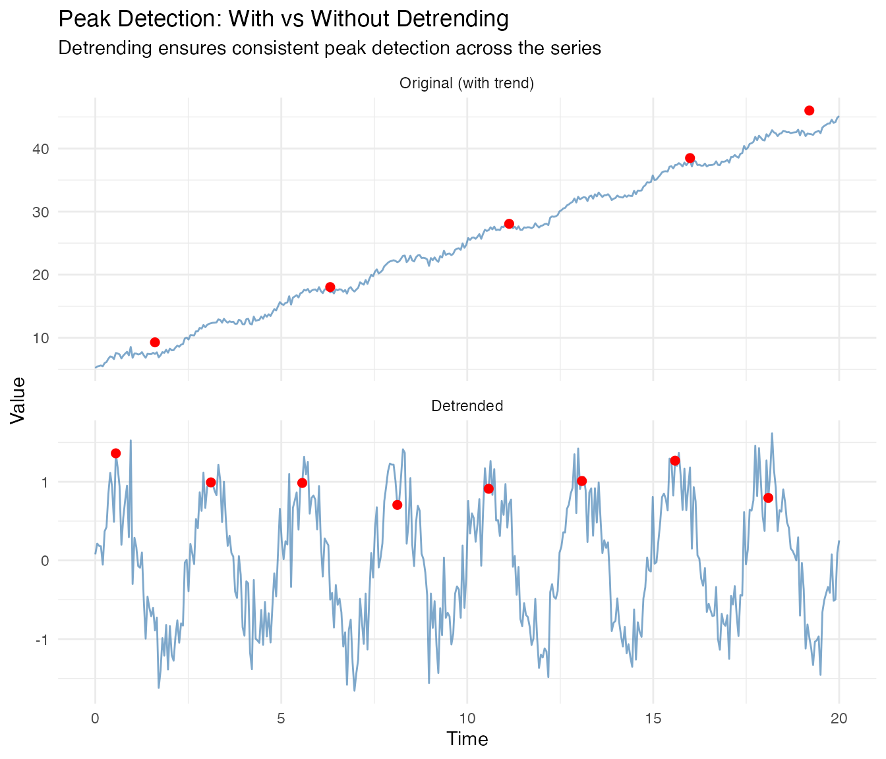
Detrending is especially important when: - Peaks near the start/end of the series have different prominence due to the trend - You need consistent peak-to-peak period estimates - The trend slope is comparable to or larger than the seasonal amplitude
Choosing a Detrending Method
| Method | Use When | Parameters |
|---|---|---|
"linear" |
Simple linear trends | None |
"polynomial" |
Curved trends (quadratic, cubic) |
degree (2, 3, etc.) |
"loess" |
Complex, irregular trends |
bandwidth (0.1-0.5) |
"diff1" |
Random walk-like data | None (reduces length by 1) |
"diff2" |
Integrated processes | None (reduces length by 2) |
"auto" |
Unknown trend type | Selects via AIC |
Recommendation: Start with "linear" for
most cases. Use "auto" if unsure. Use "loess"
for complex trends that polynomial methods cannot capture.
Peak Detection
Peak detection identifies local maxima in seasonal signals. This is useful for characterizing seasonal patterns and estimating period from peak-to-peak distances.
Parameter Tuning Guide
Peak detection quality depends heavily on parameters. Here’s a reference:
| Parameter | Purpose | Typical Values | When to Adjust |
|---|---|---|---|
min_distance |
Minimum time between peaks | period * 0.8 |
Set to ~80% of expected period |
min_prominence |
How much peak stands out | 0.1-0.5 x amplitude | Increase if too many noise peaks |
smooth_first |
Pre-smooth noisy data |
TRUE for real data |
Almost always use TRUE
|
smooth_nbasis |
Number of Fourier basis |
NULL (auto CV) |
Let CV choose optimal nbasis |
Visualizing the Smoothing Step
Before detecting peaks, let’s see what Fourier basis smoothing does to noisy data:
# Apply Fourier basis smoothing with CV-selected optimal nbasis
cv_result <- fdata2basis_cv(fd_demo, nbasis.range = 5:25, type = "fourier", criterion = "GCV")
fd_smoothed <- cv_result$fitted
# Compare original vs smoothed
df_smooth <- data.frame(
t = rep(t, 2),
y = c(X_demo, fd_smoothed$data[1, ]),
type = rep(c("Original (noisy)", "Smoothed (Fourier)"), each = length(t))
)
ggplot(df_smooth, aes(x = t, y = y, color = type)) +
geom_line(linewidth = 0.8) +
scale_color_manual(values = c("Original (noisy)" = "gray50",
"Smoothed (Fourier)" = "steelblue")) +
labs(title = "Effect of Fourier Basis Smoothing on Noisy Signal",
subtitle = paste("CV-selected optimal nbasis =", cv_result$optimal.nbasis),
x = "Time", y = "Value", color = NULL) +
theme(legend.position = "bottom")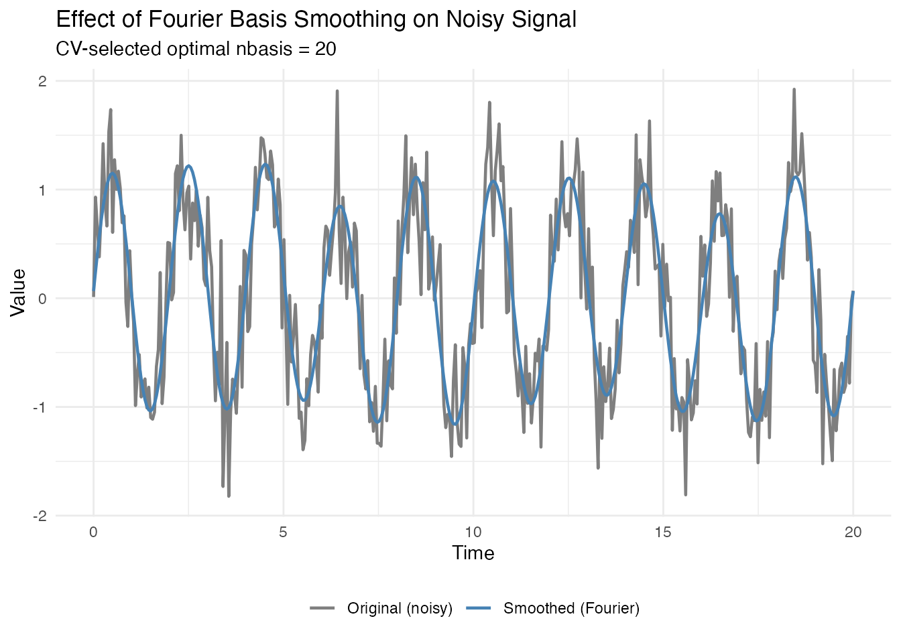
Fourier basis smoothing is ideal for seasonal signals because it naturally captures periodic patterns. Peak detection on the smoothed data will find the true peaks, not noise spikes.
# Default parameters - often too many peaks
peaks_default <- detect.peaks(fd_demo)
cat("Default parameters:", nrow(peaks_default$peaks[[1]]), "peaks found\n")
#> Default parameters: 96 peaks found
cat("(Expected:", floor(max(t) / period_true), "peaks)\n")
#> (Expected: 10 peaks)
# Add minimum distance constraint
peaks_distance <- detect.peaks(fd_demo, min_distance = period_true * 0.8)
cat("With min_distance:", nrow(peaks_distance$peaks[[1]]), "peaks found\n")
#> With min_distance: 12 peaks found
# Add Fourier smoothing for best results (GCV auto-selects nbasis)
peaks_smooth <- detect.peaks(fd_demo, min_distance = period_true * 0.8,
smooth_first = TRUE, smooth_nbasis = NULL)
cat("With smoothing:", nrow(peaks_smooth$peaks[[1]]), "peaks found\n")
#> With smoothing: 10 peaks found
cat("Estimated period from peaks:", round(peaks_smooth$mean_period, 3), "\n")
#> Estimated period from peaks: 1.999Visualizing the Difference
# Prepare data for plotting
df_default <- peaks_default$peaks[[1]]
df_distance <- peaks_distance$peaks[[1]]
df_smooth <- peaks_smooth$peaks[[1]]
# Create combined plot
p1 <- ggplot(df, aes(x = t, y = y)) +
geom_line(color = "gray50", alpha = 0.7) +
geom_point(data = df_default, aes(x = time, y = value),
color = "red", size = 2) +
labs(title = paste("Default:", nrow(df_default), "peaks"),
x = "", y = "Value")
p2 <- ggplot(df, aes(x = t, y = y)) +
geom_line(color = "gray50", alpha = 0.7) +
geom_point(data = df_distance, aes(x = time, y = value),
color = "red", size = 2) +
labs(title = paste("With min_distance:", nrow(df_distance), "peaks"),
x = "", y = "Value")
p3 <- ggplot(df, aes(x = t, y = y)) +
geom_line(color = "gray50", alpha = 0.7) +
geom_point(data = df_smooth, aes(x = time, y = value),
color = "red", size = 2) +
labs(title = paste("With smoothing:", nrow(df_smooth), "peaks"),
x = "Time", y = "Value")
library(gridExtra)
grid.arrange(p1, p2, p3, ncol = 1)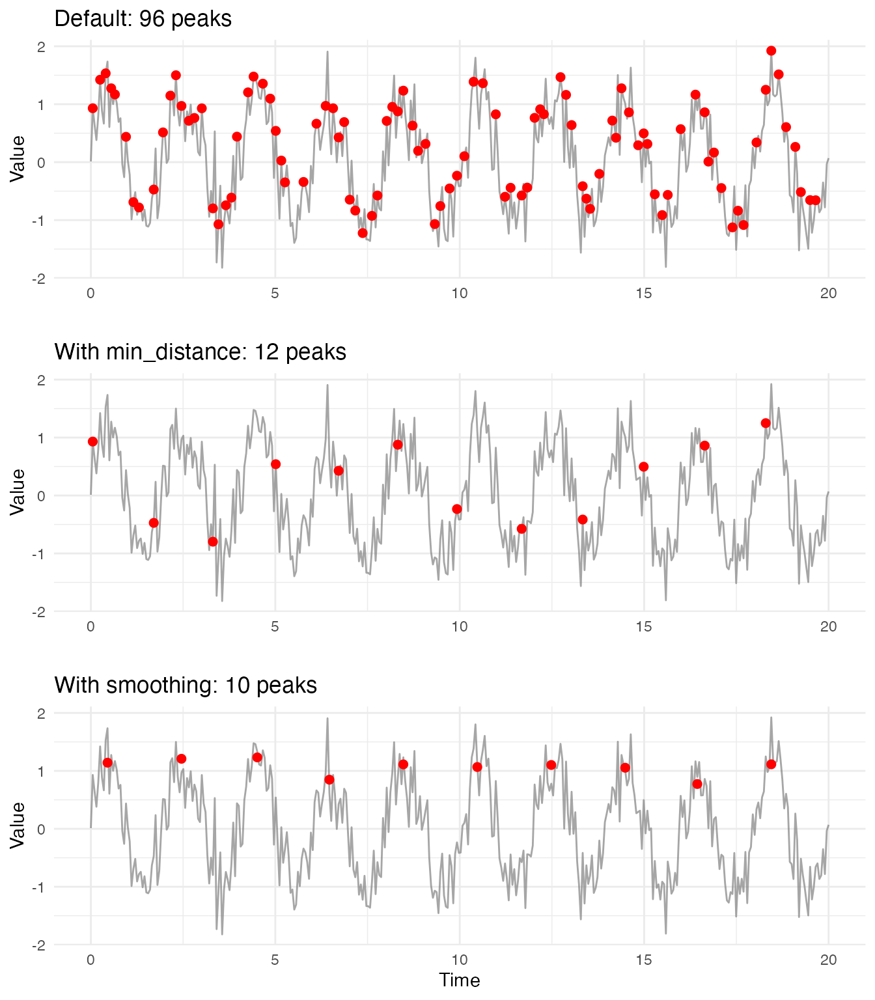
Why peak detection in noisy signals is challenging:
Noise creates many local maxima that are not true peaks. Without
smoothing, peak detection algorithms struggle to distinguish genuine
seasonal peaks from random fluctuations. The min_distance
parameter helps, but cannot fully solve the problem when noise amplitude
is comparable to the signal.
Key insight: For seasonal data, use Fourier basis
smoothing with smooth_first = TRUE. The Fourier basis is
ideal for periodic signals because it naturally captures oscillatory
patterns while suppressing noise. GCV automatically selects the optimal
number of basis functions, balancing smoothness and fidelity to the
data.
Prominence Filtering
Prominence measures how much a peak stands out from surrounding values. Use it to filter minor peaks. For best results with noisy data, combine prominence filtering with smoothing.
# Compare prominence thresholds without smoothing (less reliable)
peaks_low_prom_raw <- detect.peaks(fd_demo, min_distance = 1.5, min_prominence = 0.1)
peaks_high_prom_raw <- detect.peaks(fd_demo, min_distance = 1.5, min_prominence = 0.5)
cat("Without smoothing:\n")
#> Without smoothing:
cat(" Low prominence (0.1):", nrow(peaks_low_prom_raw$peaks[[1]]), "peaks\n")
#> Low prominence (0.1): 7 peaks
cat(" High prominence (0.5):", nrow(peaks_high_prom_raw$peaks[[1]]), "peaks\n")
#> High prominence (0.5): 1 peaks
# With smoothing - more reliable results
peaks_low_prom <- detect.peaks(fd_demo, min_distance = 1.5, min_prominence = 0.1,
smooth_first = TRUE)
peaks_high_prom <- detect.peaks(fd_demo, min_distance = 1.5, min_prominence = 0.5,
smooth_first = TRUE)
cat("\nWith smoothing:\n")
#>
#> With smoothing:
cat(" Low prominence (0.1):", nrow(peaks_low_prom$peaks[[1]]), "peaks\n")
#> Low prominence (0.1): 4 peaks
cat(" High prominence (0.5):", nrow(peaks_high_prom$peaks[[1]]), "peaks\n")
#> High prominence (0.5): 4 peaksWhen smoothing is applied first, the prominence values become more meaningful because they reflect actual signal characteristics rather than noise artifacts.
Different Signal Amplitudes
Peak detection works correctly regardless of signal amplitude. The algorithm normalizes internally based on local signal characteristics.
t <- seq(0, 10, length.out = 200)
amplitudes <- c(0.5, 1.0, 2.0, 5.0)
# Create plots for each amplitude
amplitude_plots <- lapply(amplitudes, function(amp) {
X <- matrix(amp * sin(2 * pi * t / 2), nrow = 1)
fd <- fdata(X, argvals = t)
result <- detect.peaks(fd)
peaks <- result$peaks[[1]]
df <- data.frame(t = t, y = X[1,])
ggplot(df, aes(x = t, y = y)) +
geom_line(color = "steelblue") +
geom_point(data = peaks, aes(x = time, y = value),
color = "red", size = 3) +
labs(title = paste("Amplitude =", amp, "- Found", nrow(peaks), "peaks"),
x = "Time", y = "Value")
})
library(gridExtra)
grid.arrange(grobs = amplitude_plots, ncol = 2)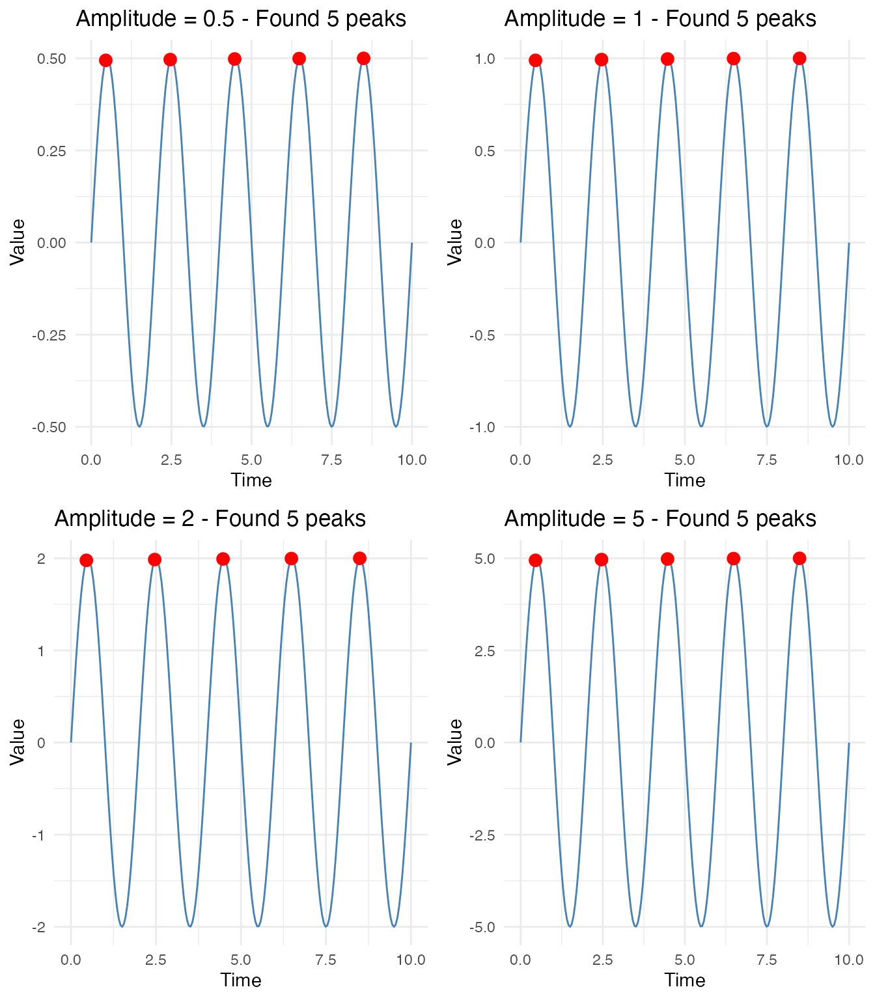
All four signals correctly detect 5 peaks, with peak values matching their respective amplitudes.
Non-Uniform Peak Spacing
Real-world signals often have varying frequencies or complex
interference patterns. detect.peaks handles these cases by
analyzing local signal structure.
Chirp Signal (Increasing Frequency)
A chirp signal has frequency that increases over time, causing peaks to get progressively closer together.
t <- seq(0, 10, length.out = 400)
# Phase integral for linearly increasing frequency: phi(t) = 2*pi*(0.5*t + 0.05*t^2)
phase <- 2 * pi * (0.5 * t + 0.05 * t^2)
X <- matrix(sin(phase), nrow = 1)
fd <- fdata(X, argvals = t)
result <- detect.peaks(fd)
peaks <- result$peaks[[1]]
# Plot
df <- data.frame(t = t, y = X[1,])
ggplot(df, aes(x = t, y = y)) +
geom_line(color = "steelblue") +
geom_point(data = peaks, aes(x = time, y = value),
color = "red", size = 3) +
labs(title = "Chirp Signal: Frequency Increases Over Time",
subtitle = paste("Detected", nrow(peaks), "peaks with decreasing spacing"),
x = "Time", y = "Value")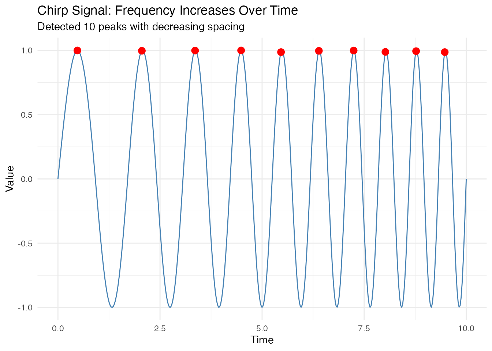
# Show inter-peak distances decreasing over time
distances <- result$inter_peak_distances[[1]]
if (length(distances) >= 2) {
df_dist <- data.frame(
peak_pair = seq_along(distances),
distance = distances
)
ggplot(df_dist, aes(x = peak_pair, y = distance)) +
geom_point(size = 3, color = "steelblue") +
geom_line(linetype = "dashed", color = "gray50") +
labs(title = "Inter-Peak Distances Decrease Over Time",
x = "Peak Pair (sequential)", y = "Distance")
}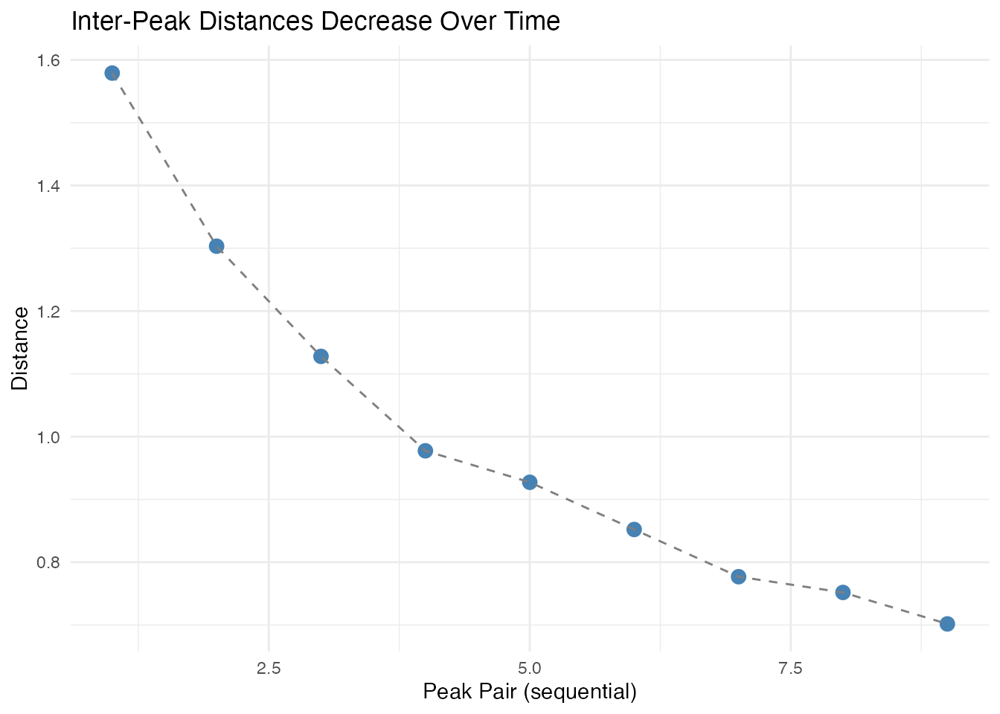
Sum of Sine Waves (Interference Pattern)
When two sine waves with different periods are combined, they create an interference pattern with non-uniform peak spacing.
t <- seq(0, 12, length.out = 300)
# Sum of periods 2 and 3
X <- matrix(sin(2 * pi * t / 2) + 0.5 * sin(2 * pi * t / 3), nrow = 1)
fd <- fdata(X, argvals = t)
result <- detect.peaks(fd, min_distance = 1.0)
peaks <- result$peaks[[1]]
# Plot
df <- data.frame(t = t, y = X[1,])
ggplot(df, aes(x = t, y = y)) +
geom_line(color = "steelblue") +
geom_point(data = peaks, aes(x = time, y = value),
color = "red", size = 3) +
labs(title = "Sum of Two Sine Waves (periods 2 and 3)",
subtitle = paste("Detected", nrow(peaks), "peaks with varying spacing"),
x = "Time", y = "Value")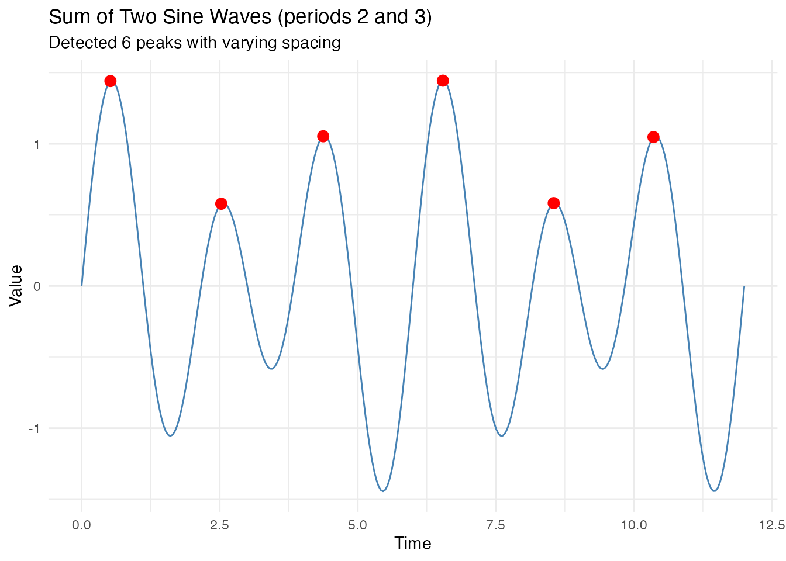
# Show variable inter-peak distances
distances <- result$inter_peak_distances[[1]]
cat("Inter-peak distances:", round(distances, 2), "\n")
#> Inter-peak distances: 2.01 1.85 2.17 2.01 1.81
cat("Range:", round(min(distances), 2), "to", round(max(distances), 2), "\n")
#> Range: 1.81 to 2.17The peak detection algorithm correctly identifies local maxima even when the underlying signal has complex structure with varying peak-to-peak distances.
Measuring Seasonal Strength
Seasonal strength quantifies how much of the signal’s variance is explained by the seasonal component. Values range from 0 (no seasonality) to 1 (pure seasonal signal).
Variance vs Spectral Methods
ss_variance <- seasonal.strength(fd_noisy, period = period_true, method = "variance")
ss_spectral <- seasonal.strength(fd_noisy, period = period_true, method = "spectral")
cat("Variance method:", round(ss_variance, 3), "\n")
#> Variance method: 0.863
cat("Spectral method:", round(ss_spectral, 3), "\n")
#> Spectral method: 0.893Comparing Different Signal Types
# Create signals with different seasonality levels
X_noise <- rnorm(length(t)) # Pure noise
fd_noise <- fdata(matrix(X_noise, nrow = 1), argvals = t)
X_mixed <- 0.5 * sin(2 * pi * t / period_true) + 0.5 * rnorm(length(t))
fd_mixed <- fdata(matrix(X_mixed, nrow = 1), argvals = t)
# Calculate strengths
strengths <- c(
"Pure seasonal" = seasonal.strength(fd_pure, period = period_true),
"Noisy seasonal (0.3 SD)" = seasonal.strength(fd_noisy, period = period_true),
"Mixed (50/50)" = seasonal.strength(fd_mixed, period = period_true),
"Pure noise" = seasonal.strength(fd_noise, period = period_true)
)
df_strength <- data.frame(
Signal = factor(names(strengths), levels = names(strengths)),
Strength = strengths
)
ggplot(df_strength, aes(x = Signal, y = Strength, fill = Signal)) +
geom_col() +
labs(title = "Seasonal Strength Comparison",
x = "", y = "Seasonal Strength") +
ylim(0, 1) +
theme(legend.position = "none",
axis.text.x = element_text(angle = 15, hjust = 1))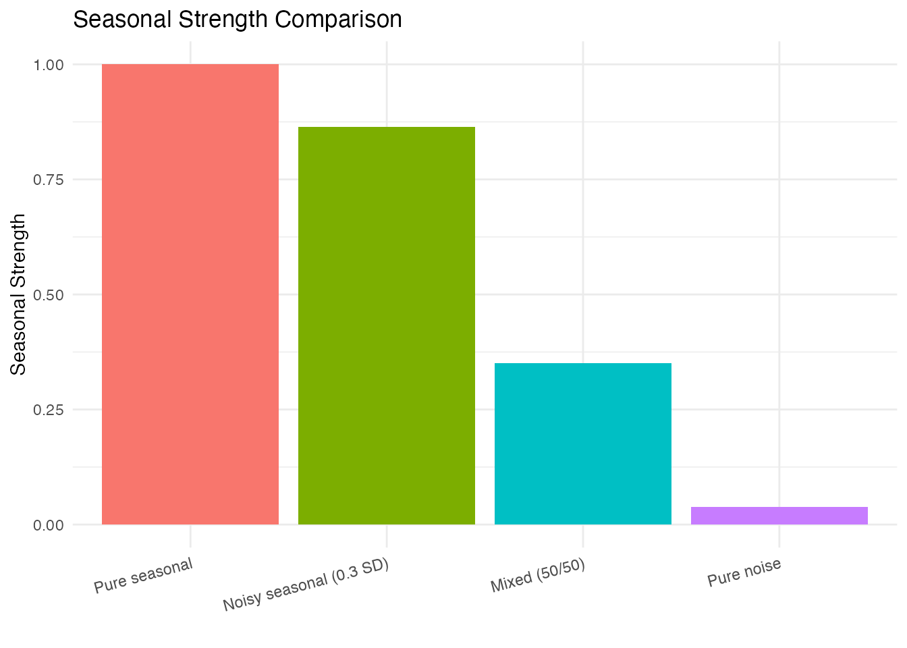
Time-Varying Seasonal Strength
Seasonal strength can change over time. Use a sliding window to track this.
# Signal that loses seasonality
t_long <- seq(0, 40, length.out = 800)
X_changing <- ifelse(t_long < 20,
sin(2 * pi * t_long / period_true) + rnorm(sum(t_long < 20), sd = 0.2),
rnorm(sum(t_long >= 20), sd = 0.5))
fd_changing <- fdata(matrix(X_changing, nrow = 1), argvals = t_long)
# Compute time-varying strength
ss_curve <- seasonal.strength.curve(fd_changing, period = period_true,
window_size = 4 * period_true)
# Plot both signal and strength
df1 <- data.frame(t = t_long, y = X_changing, panel = "Signal")
df2 <- data.frame(t = t_long, y = ss_curve$data[1,], panel = "Seasonal Strength")
df_combined <- rbind(df1, df2)
ggplot(df_combined, aes(x = t, y = y)) +
geom_line(color = "steelblue") +
facet_wrap(~panel, ncol = 1, scales = "free_y") +
geom_vline(xintercept = 20, linetype = "dashed", color = "red") +
labs(title = "Time-Varying Seasonal Strength",
subtitle = "Seasonality stops at t = 20 (red line)",
x = "Time", y = "")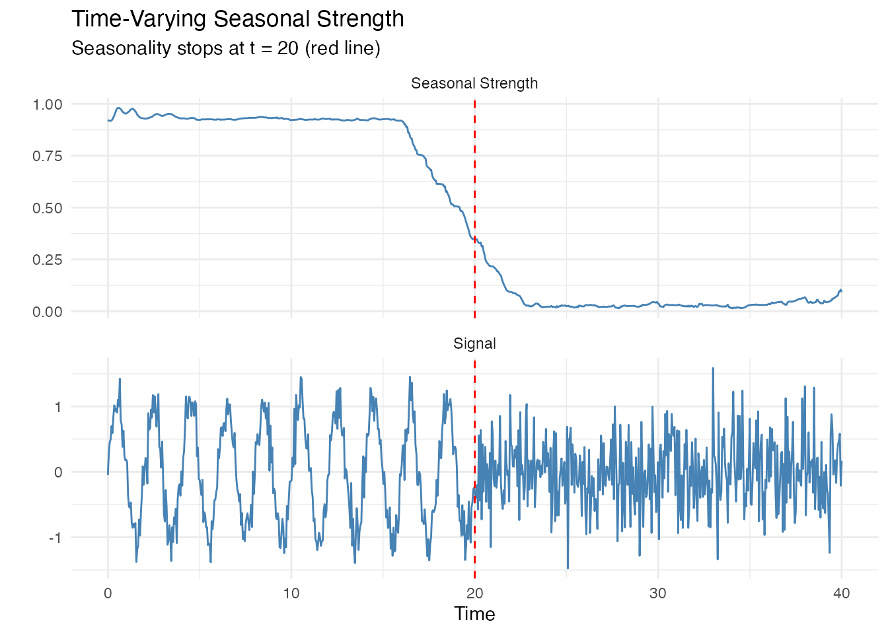
Change Detection
Automatically detect when seasonality starts or stops.
Manual Threshold
changes <- detect.seasonality.changes(fd_changing, period = period_true,
threshold = 0.3,
window_size = 4 * period_true,
min_duration = 2 * period_true)
print(changes)
#> Seasonality Change Detection
#> ----------------------------
#> Number of changes: 1
#>
#> time type strength_before strength_after
#> 1 20.47559 cessation 0.3152373 0.2918658Automatic Threshold (Otsu’s Method)
When you don’t know the appropriate threshold, use Otsu’s method to determine it automatically from the data.
changes_auto <- detect.seasonality.changes.auto(fd_changing, period = period_true,
threshold_method = "otsu")
print(changes_auto)
#> Seasonality Change Detection (Auto Threshold)
#> ----------------------------------------------
#> Computed threshold: 0.5047
#> Number of changes: 1
#>
#> time type strength_before strength_after
#> 1 19.52441 cessation 0.5087545 0.5030707Visualizing Change Points
df <- data.frame(t = t_long, y = X_changing)
p <- ggplot(df, aes(x = t, y = y)) +
geom_line(color = "steelblue", alpha = 0.7) +
labs(title = "Seasonality Change Detection",
x = "Time", y = "Value")
# Add change points
if (nrow(changes_auto$change_points) > 0) {
for (i in 1:nrow(changes_auto$change_points)) {
cp <- changes_auto$change_points[i, ]
p <- p + geom_vline(xintercept = cp$time,
linetype = "dashed",
color = ifelse(cp$type == "onset", "green4", "red"),
linewidth = 1)
}
p <- p + labs(subtitle = "Green = onset, Red = cessation")
}
print(p)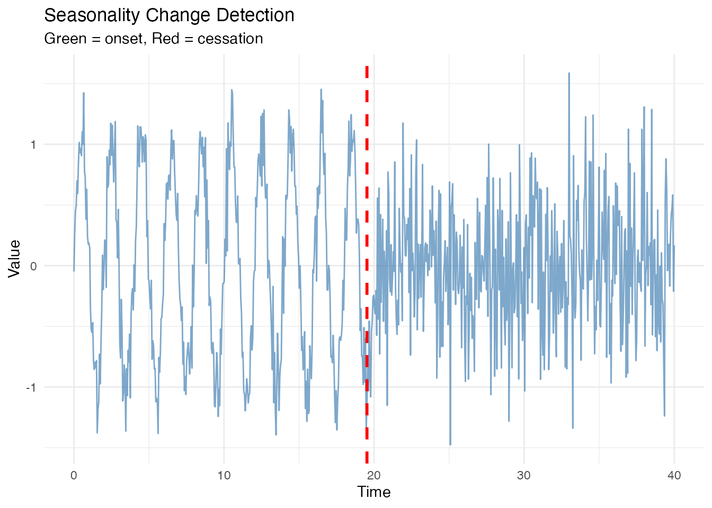
Signals with Varying Period
Some signals have periods that drift or change over time. The
instantaneous.period() function uses the Hilbert transform
to estimate the period at each time point.
When to Use Instantaneous Period
Good use cases:
- Slowly drifting systems (circadian rhythms shifting with seasons)
- Frequency-modulated (FM) signals in engineering
- Climate oscillations with variable period (e.g., ENSO)
Poor use cases:
- Random frequency jumps (use change detection instead)
- Multiple concurrent periodicities (use iterative approach instead)
- Very noisy short series (use peak-to-peak methods instead)
Chirp Signal (Smoothly Increasing Frequency)
# Chirp: frequency increases linearly
t_chirp <- seq(0, 10, length.out = 500)
freq <- 0.5 + 0.15 * t_chirp # Frequency increases from 0.5 to 2
phase <- 2 * pi * cumsum(freq) * diff(c(0, t_chirp))
X_chirp <- sin(phase)
fd_chirp <- fdata(matrix(X_chirp, nrow = 1), argvals = t_chirp)
df <- data.frame(t = t_chirp, y = X_chirp)
ggplot(df, aes(x = t, y = y)) +
geom_line(color = "steelblue") +
labs(title = "Chirp Signal (Smoothly Increasing Frequency)",
x = "Time", y = "Value")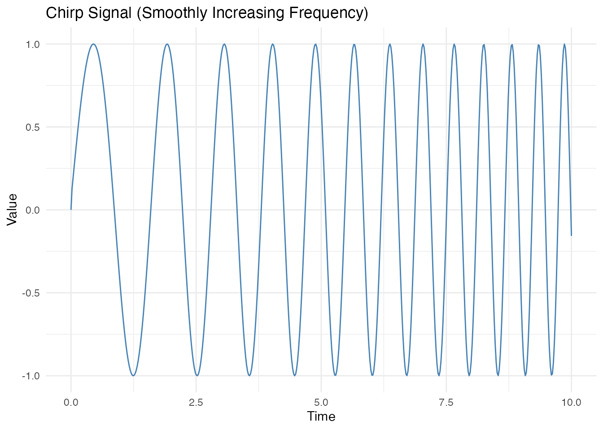
inst <- instantaneous.period(fd_chirp)
# True period (1/frequency)
true_period <- 1 / freq
# Compare
df <- data.frame(
t = t_chirp,
Estimated = inst$period$data[1,],
True = true_period
)
# Remove extreme values at boundaries
df$Estimated[df$Estimated > 5 | df$Estimated < 0] <- NA
ggplot(df, aes(x = t)) +
geom_line(aes(y = True, color = "True"), linewidth = 1) +
geom_line(aes(y = Estimated, color = "Estimated"), alpha = 0.7) +
scale_color_manual(values = c("True" = "steelblue", "Estimated" = "coral")) +
labs(title = "Instantaneous Period Estimation",
x = "Time", y = "Period", color = "") +
ylim(0, 3)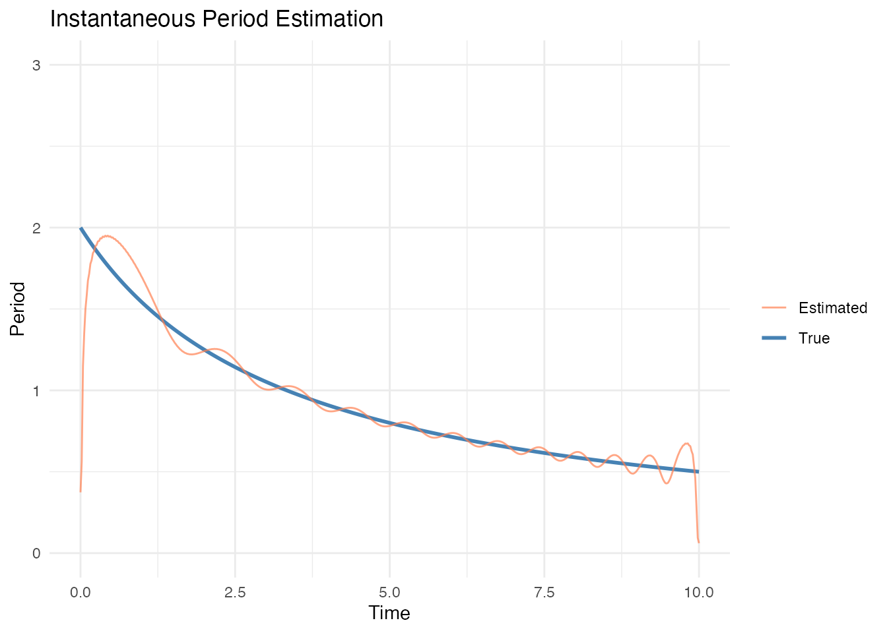
Amplitude Envelope Extraction
The Hilbert transform also provides the instantaneous amplitude (envelope), useful for amplitude-modulated signals.
# Amplitude-modulated signal
envelope_true <- 1 + 0.5 * sin(2 * pi * t / 10) # Slow modulation
X_am <- envelope_true * sin(2 * pi * t / period_true)
fd_am <- fdata(matrix(X_am, nrow = 1), argvals = t)
inst_am <- instantaneous.period(fd_am)
df <- data.frame(
t = t,
Signal = X_am,
Envelope = inst_am$amplitude$data[1,]
)
ggplot(df, aes(x = t)) +
geom_line(aes(y = Signal), color = "steelblue", alpha = 0.7) +
geom_line(aes(y = Envelope), color = "red", linewidth = 1) +
geom_line(aes(y = -Envelope), color = "red", linewidth = 1) +
labs(title = "Amplitude Envelope Extraction",
subtitle = "Red lines show the extracted envelope",
x = "Time", y = "Value")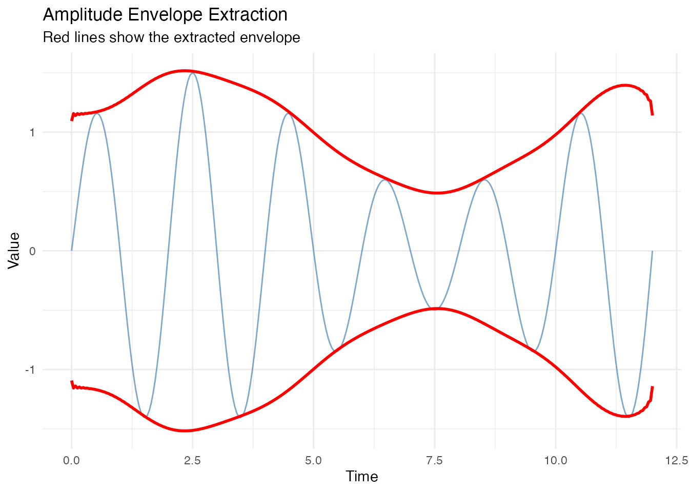
Limitations and Alternatives
Boundary effects: The Hilbert transform produces unreliable estimates near the beginning and end of the series.
Noise sensitivity: High-frequency noise can corrupt period estimates. Consider smoothing first.
Random frequency changes: When frequency changes abruptly and randomly, the instantaneous period estimate becomes unreliable.
# Demonstrate limitation: signal with random frequency regime changes
set.seed(123)
t_rand <- seq(0, 20, length.out = 400)
freq_regime <- rep(c(1, 2, 0.5, 1.5), each = 100) # Abrupt changes
X_rand <- sin(2 * pi * cumsum(freq_regime) * diff(c(0, t_rand)))
fd_rand <- fdata(matrix(X_rand, nrow = 1), argvals = t_rand)
inst_rand <- instantaneous.period(fd_rand)
est_period <- inst_rand$period$data[1,]
est_period[est_period > 5 | est_period < 0.1] <- NA
df <- data.frame(
t = t_rand,
True = 1/freq_regime,
Estimated = est_period
)
ggplot(df, aes(x = t)) +
geom_step(aes(y = True, color = "True"), linewidth = 1) +
geom_line(aes(y = Estimated, color = "Estimated"), alpha = 0.7) +
scale_color_manual(values = c("True" = "steelblue", "Estimated" = "coral")) +
labs(title = "Limitation: Abrupt Frequency Changes",
subtitle = "Hilbert transform struggles with discontinuities",
x = "Time", y = "Period", color = "")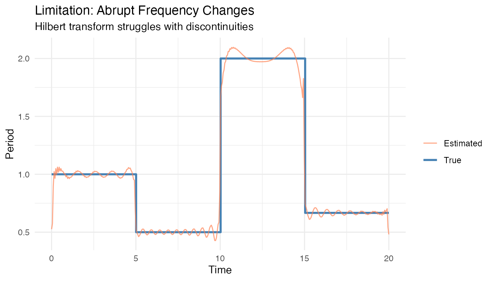
Alternative for abrupt changes: Use
detect.seasonality.changes() to find regime boundaries,
then analyze each segment separately.
Working with Short Series
For short series with only 3-5 complete cycles, fdars provides specialized functions for analyzing peak timing variability and classifying seasonality.
Challenges with Few Cycles
- Period estimation has limited frequency resolution
- Statistical measures have high uncertainty
- Peak-to-peak analysis becomes more important
Peak Timing Variability
Detect shifts in peak timing between cycles (e.g., a phenological event shifting from March to April to May over several years).
# Simulate 5 years where peak timing shifts
t_short <- seq(0, 5, length.out = 500)
period_short <- 1
# Peaks shift gradually later each year
phase_shifts <- c(0, 0.05, 0.10, 0.08, 0.04)
X_short <- rep(0, length(t_short))
for (i in 1:length(t_short)) {
year <- floor(t_short[i]) + 1
year <- min(year, 5)
X_short[i] <- sin(2 * pi * (t_short[i] + phase_shifts[year]) / period_short)
}
X_short <- X_short + rnorm(length(t_short), sd = 0.1)
fd_short <- fdata(matrix(X_short, nrow = 1), argvals = t_short)
# Plot the short series
df_short <- data.frame(t = t_short, y = X_short)
ggplot(df_short, aes(x = t, y = y)) +
geom_line(color = "steelblue") +
geom_vline(xintercept = 0:5, linetype = "dotted", alpha = 0.5) +
labs(title = "5-Year Series with Variable Peak Timing",
x = "Year", y = "Value")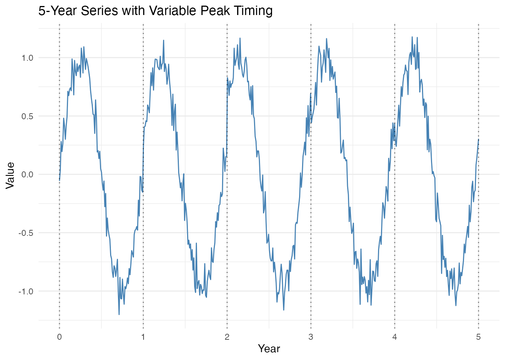
# Analyze peak timing
timing <- analyze.peak.timing(fd_short, period = period_short)
print(timing)
#> Peak Timing Variability Analysis
#> ---------------------------------
#> Number of peaks: 5
#> Mean timing: 0.1924
#> Std timing: 0.0364
#> Range timing: 0.1062
#> Variability: 0.3640 (moderate)
#> Timing trend: -0.0110Visualizing Peak Timing
# Get detected peaks with Fourier smoothing
peaks_short <- detect.peaks(fd_short, min_distance = 0.7,
smooth_first = TRUE, smooth_nbasis = NULL)
peak_df <- peaks_short$peaks[[1]]
# Plot with peaks marked
ggplot(df_short, aes(x = t, y = y)) +
geom_line(color = "steelblue") +
geom_point(data = peak_df, aes(x = time, y = value),
color = "red", size = 3) +
geom_vline(xintercept = 0:5, linetype = "dotted", alpha = 0.5) +
labs(title = "5-Year Series with Detected Peaks",
x = "Year", y = "Value")
# Plot peak timing within each year
if (nrow(peak_df) >= 3) {
peak_years <- floor(peak_df$time)
peak_phase <- peak_df$time - peak_years
df_timing <- data.frame(
year = peak_years + 1,
phase = peak_phase
)
ggplot(df_timing, aes(x = year, y = phase)) +
geom_point(size = 4, color = "steelblue") +
geom_line(linetype = "dashed", color = "gray50") +
labs(title = "Peak Timing Variability Across Years",
x = "Year", y = "Phase within Year") +
ylim(0, 1)
}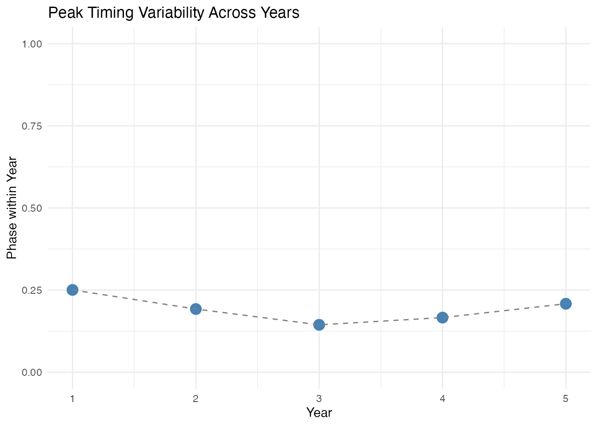
Seasonality Classification
Automatically classify the type of seasonality pattern.
class_result <- classify.seasonality(fd_short, period = period_short)
print(class_result)
#> Seasonality Classification
#> --------------------------
#> Classification: StableSeasonal
#> Is seasonal: TRUE
#> Stable timing: TRUE
#> Timing variability: 0.3640
#> Seasonal strength: 0.9351
# Visualize classification metrics
# Normalize timing variability to 0-1 scale (lower is better/more stable)
stability_score <- 1 - min(1, class_result$timing_variability / 0.2)
class_df <- data.frame(
Metric = c("Seasonal Strength", "Timing Stability"),
Value = c(class_result$seasonal_strength, stability_score)
)
ggplot(class_df, aes(x = Metric, y = Value, fill = Metric)) +
geom_col() +
ylim(0, 1) +
labs(title = paste("Classification:", class_result$classification),
x = "", y = "Score") +
scale_fill_brewer(palette = "Set2") +
theme(legend.position = "none")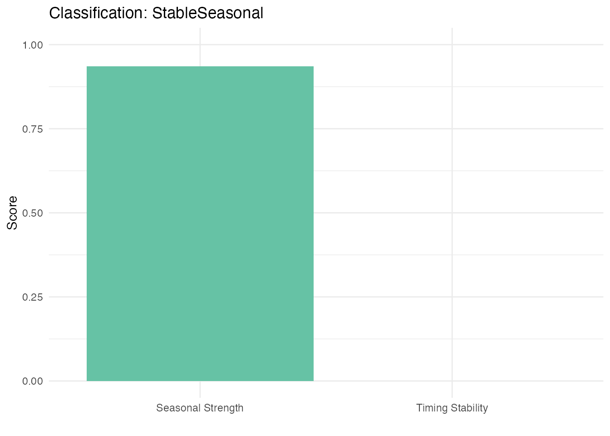
Classification Types
The classify.seasonality() function returns one of four
classifications based on seasonal strength and timing variability:
| Classification | Seasonal Strength | Timing Variability | Interpretation |
|---|---|---|---|
| stable | > 0.7 | < 0.05 | Consistent pattern across cycles |
| variable | 0.4 - 0.7 | 0.05 - 0.15 | Clear seasonality but parameters change |
| intermittent | < 0.4 | any | Seasonality appears and disappears |
| none | < 0.2 | any | No clear seasonal pattern |
# Example: Stable seasonality - clean signal with consistent timing
X_stable <- sin(2 * pi * t_short / period_short) + rnorm(length(t_short), sd = 0.05)
fd_stable <- fdata(matrix(X_stable, nrow = 1), argvals = t_short)
class_stable <- classify.seasonality(fd_stable, period = period_short)
# Example: Variable seasonality - amplitude and timing drift
phase_var <- seq(0, 0.2, length.out = length(t_short))
amp_var <- 1 + 0.3 * sin(2 * pi * t_short / 3)
X_variable <- amp_var * sin(2 * pi * (t_short + phase_var) / period_short) +
rnorm(length(t_short), sd = 0.2)
fd_variable <- fdata(matrix(X_variable, nrow = 1), argvals = t_short)
class_variable <- classify.seasonality(fd_variable, period = period_short)
# Example: Intermittent seasonality - pattern appears and disappears
X_intermittent <- ifelse(t_short < 2 | t_short > 4,
sin(2 * pi * t_short / period_short),
rnorm(sum(t_short >= 2 & t_short <= 4), sd = 0.5))
X_intermittent <- X_intermittent + rnorm(length(t_short), sd = 0.15)
fd_intermittent <- fdata(matrix(X_intermittent, nrow = 1), argvals = t_short)
class_intermittent <- classify.seasonality(fd_intermittent, period = period_short)
# Example: No seasonality - pure noise
X_none <- rnorm(length(t_short), sd = 1)
fd_none <- fdata(matrix(X_none, nrow = 1), argvals = t_short)
class_none <- classify.seasonality(fd_none, period = period_short)
# Summary
cat("Classification results:\n")
#> Classification results:
cat(" Stable signal: ", class_stable$classification,
"(strength:", round(class_stable$seasonal_strength, 2), ")\n")
#> Stable signal: StableSeasonal (strength: 0.99 )
cat(" Variable signal: ", class_variable$classification,
"(strength:", round(class_variable$seasonal_strength, 2), ")\n")
#> Variable signal: VariableTiming (strength: 0.78 )
cat(" Intermittent signal:", class_intermittent$classification,
"(strength:", round(class_intermittent$seasonal_strength, 2), ")\n")
#> Intermittent signal: IntermittentSeasonal (strength: 0.49 )
cat(" No seasonality: ", class_none$classification,
"(strength:", round(class_none$seasonal_strength, 2), ")\n")
#> No seasonality: NonSeasonal (strength: 0.01 )
# Visualize all four classification types
df_examples <- data.frame(
t = rep(t_short, 4),
y = c(X_stable, X_variable, X_intermittent, X_none),
Type = factor(rep(c("Stable", "Variable", "Intermittent", "None"),
each = length(t_short)),
levels = c("Stable", "Variable", "Intermittent", "None"))
)
ggplot(df_examples, aes(x = t, y = y)) +
geom_line(color = "steelblue") +
facet_wrap(~Type, ncol = 1, scales = "free_y") +
labs(title = "Seasonality Classification Examples",
x = "Time", y = "Value")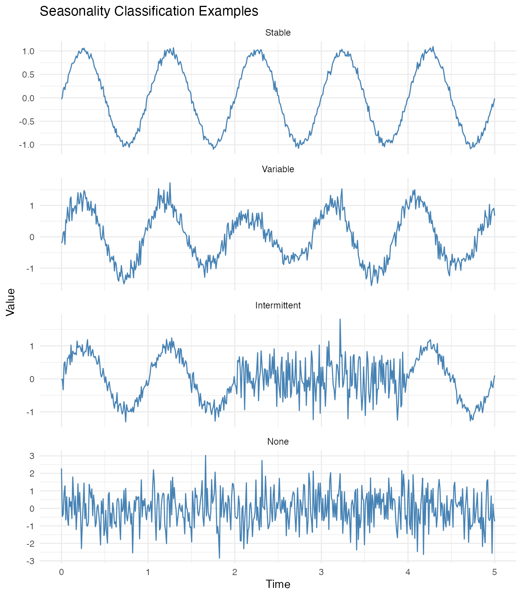
Automatic Fourier Smoothing for Short Series
Peak detection with automatic smoothing is especially important for noisy short series.
# More noisy short series
X_noisy_short <- sin(2 * pi * t_short / period_short) + rnorm(length(t_short), sd = 0.5)
fd_noisy_short <- fdata(matrix(X_noisy_short, nrow = 1), argvals = t_short)
# Auto-select smoothing via Fourier basis CV
cv_short <- fdata2basis_cv(fd_noisy_short, nbasis.range = 3:15, type = "fourier")
peaks_auto <- detect.peaks(cv_short$fitted, min_distance = 0.7)
cat("Peaks found with Fourier CV smoothing:", nrow(peaks_auto$peaks[[1]]), "\n")
#> Peaks found with Fourier CV smoothing: 5
cat("Expected peaks:", 5, "\n")
#> Expected peaks: 5
cat("Estimated period:", round(peaks_auto$mean_period, 3), "\n")
#> Estimated period: 0.997Multiple Curves
All functions work with multiple curves simultaneously.
n_curves <- 5
t <- seq(0, 10, length.out = 200)
periods <- seq(1.8, 2.2, length.out = n_curves) # Slightly varying periods
X <- matrix(0, n_curves, length(t))
for (i in 1:n_curves) {
X[i, ] <- sin(2 * pi * t / periods[i]) + rnorm(length(t), sd = 0.2)
}
fd_curves <- fdata(X, argvals = t)
# Plot all curves
plot(fd_curves) +
labs(title = "Multiple Seasonal Curves",
x = "Time", y = "Value")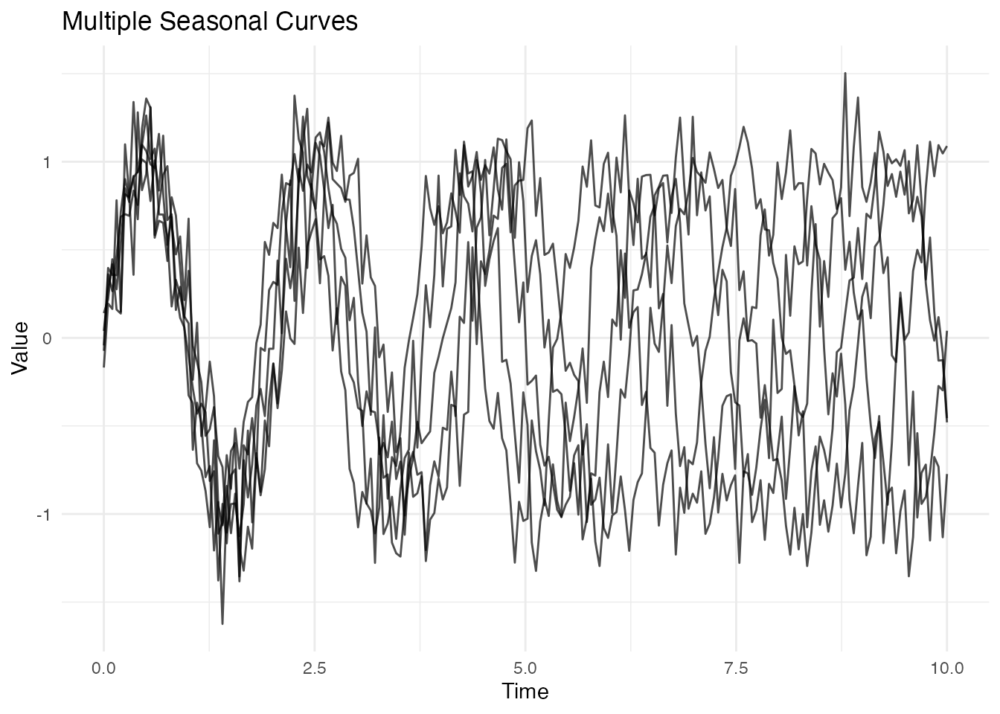
# Period estimation uses the mean curve
est_mean <- estimate.period(fd_curves, method = "fft")
cat("Estimated period (from mean):", est_mean$period, "\n")
#> Estimated period (from mean): 2.01005
cat("True mean period:", mean(periods), "\n")
#> True mean period: 2
# Peak detection for each curve
peaks_curves <- detect.peaks(fd_curves, min_distance = 1.5)
cat("\nMean period from peaks:", peaks_curves$mean_period, "\n")
#>
#> Mean period from peaks: 1.730653
# Seasonal strength (aggregated)
ss_curves <- seasonal.strength(fd_curves, period = 2)
cat("Seasonal strength:", round(ss_curves, 3), "\n")
#> Seasonal strength: 0.557Summary
Function Reference
| Function | Purpose |
|---|---|
estimate.period() |
Estimate seasonal period (FFT or ACF method) |
detect.periods() |
Detect multiple concurrent periodicities |
detect.peaks() |
Find and characterize peaks (with auto GCV smoothing) |
seasonal.strength() |
Measure overall seasonality strength |
seasonal.strength.curve() |
Time-varying seasonality strength |
detect.seasonality.changes() |
Find onset/cessation of seasonality |
detect.seasonality.changes.auto() |
Auto threshold using Otsu’s method |
instantaneous.period() |
Period estimation for smoothly drifting signals |
analyze.peak.timing() |
Analyze peak timing variability across cycles |
classify.seasonality() |
Classify seasonality type (stable/variable/intermittent) |
detrend() |
Remove trends (linear, polynomial, LOESS, differencing) |
decompose() |
Seasonal-trend decomposition (additive or multiplicative) |
Decision Guide
Non-stationary data (trends present):
- Linear trend:
detrend(method = "linear")or usedetrend_method = "linear"parameter - Complex/curved trend:
detrend(method = "loess")ormethod = "auto" - Growing seasonal amplitude:
decompose(method = "multiplicative") - Full decomposition needed:
decompose()returns trend + seasonal + remainder
Period estimation:
- Period unknown, signal stable:
estimate.period(method = "fft") - Period unknown, data has trend:
estimate.period(detrend_method = "linear") - Period unknown, multiple independent periods:
detect.periods() - Period varies smoothly over time:
instantaneous.period()
Peak detection:
- Clean data:
detect.peaks()with default parameters - Noisy data: Add
smooth_first = TRUE(Fourier smoothing with GCV-selected nbasis) - Data with trend: Add
detrend_method = "linear" - Still too many peaks: Increase
min_prominence
Seasonal strength:
- Single measurement:
seasonal.strength() - Data with trend:
seasonal.strength(detrend_method = "linear") - Track changes over time:
seasonal.strength.curve() - Detect when seasonality stops:
detect.seasonality.changes.auto()
Short series (3-5 cycles):
- Characterize timing shifts:
analyze.peak.timing() - Classify pattern type:
classify.seasonality()
Processing Large Numbers of Series
When analyzing many series (e.g., 500k time series), use a tiered approach to balance speed and depth of analysis:
Tier 1 - Fast screening (all series):
# Quick FFT period estimation - very fast
est <- estimate.period(fd, method = "fft")
if (est$confidence < 0.3) return("no_seasonality")This filters out ~80% of series with no clear seasonality in typical mixed datasets.
Tier 2 - Validation (remaining ~20%):
# Add seasonal strength check
ss <- seasonal.strength(fd, period = est$period)
if (ss < 0.2) return("weak_seasonality")Tier 3 - Full analysis (top candidates only):
# Expensive operations - classification, multiple periods
class <- classify.seasonality(fd, period = est$period)
periods <- detect.periods(fd) # if multiple periods suspectedParallelization:
All fdars Rust functions are thread-safe. Use
parallel::mclapply() or
future.apply::future_lapply() for parallel processing:
# Example batch processing workflow
library(parallel)
results <- mclapply(series_list, function(fd) {
est <- estimate.period(fd, method = "fft")
if (est$confidence < 0.3) return(list(classification = "none"))
ss <- seasonal.strength(fd, period = est$period)
list(period = est$period, confidence = est$confidence, strength = ss)
}, mc.cores = detectCores() - 1)Memory management:
- Process in batches of 1000-5000 series
- Store only summary results (period, confidence, classification)
- Stream data from disk rather than loading all at once